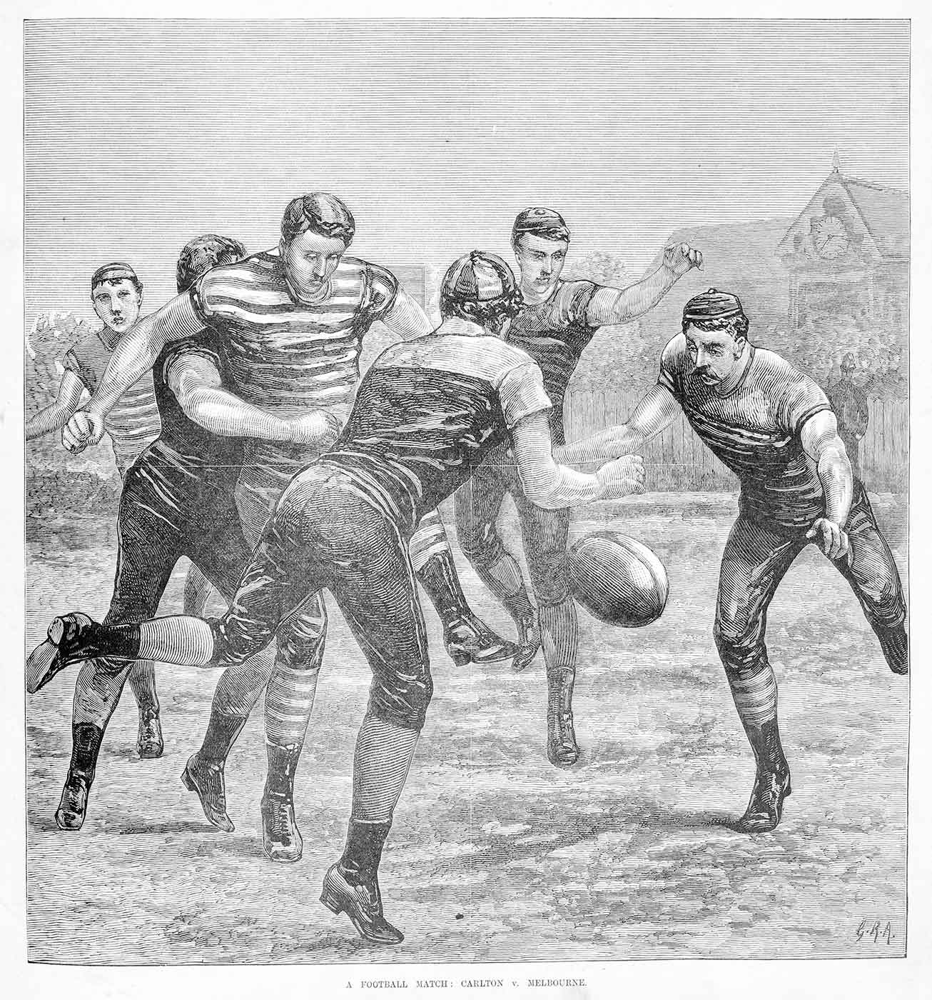
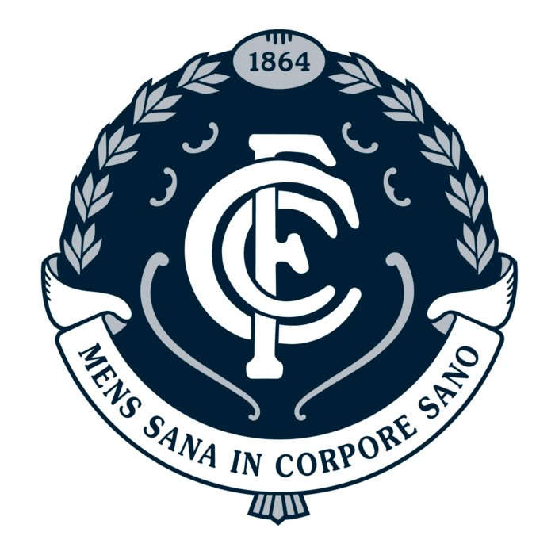

Welcome to the AFL Website
Scroll down to see the leader board and other related news
Leader Board
All 18 teams and their points
| Team | Wins |
|---|---|
| {{lad.team}} | {{lad.wins}} |

A match between Scotch and Melbourne Grammar schools was held on August 7, 1858. This is generally considered the first game of what we now call AFL (Australian Rules Football), though the rules for this match would have been rather crude.
A match between Scotch and Melbourne Grammar schools was held on August 7, 1858. This is generally considered the first game of what we now call AFL (Australian Rules Football), though the rules for this match would have been rather crude.

Essendon and Carlton have won the most VFL/AFL premierships, with a total of 16 each. Of the teams currently competing in the Australian Football League, only Fremantle, Gold Coast and Greater Western Sydney (three of the competition's four newest clubs) are yet to win a premiership.
Interesting Facts about AFL
Amazingly, 14 of Geelong’s 46 listed players have first names starting with the letter J
When the game first started in 1858, no time limits existed for matches. The first team to score two goals was declared the winner.
Think John is a common name? Think again. There is only one player currently on an AFL list with the first name of John. Port Adelaide’s John Butcher.
Geelong defender Harry Taylor correctly predicted that the 2010 AFL Grand Final between Collingwood and St. Kilda would end in a draw.
Australian Rules Football is played in over 80 countries, including Denmark, Sweden, America, Canada and South Africa.
In 1916, Fitzroy managed to win the wooden spoon and the Premiership in the same year. Only four clubs competed in 1916, due to World War I, with Fitzroy finishing fourth, or last, and then winning the three finals, to claim the premiership.
Michael Tuck has the most Premierships for an individual player with an amazing seven Premierships from 11 Grand Finals.